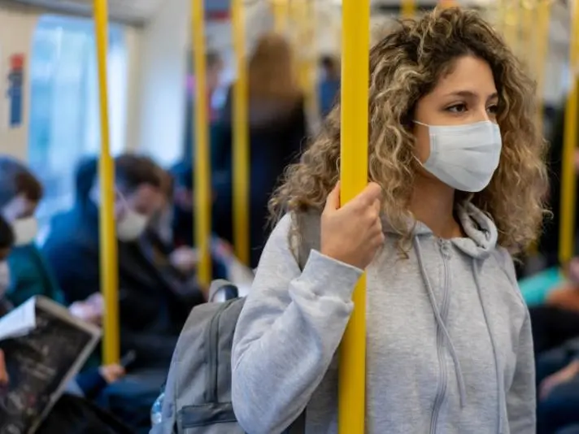

Post-COVID Mental Health Recovery

The COVID-19 pandemic has left lasting effects on global mental health, with increased
cases of anxiety, depression, and
trauma-related disorders reported in various communities. The disruptions caused by
prolonged isolation, health
concerns, and significant life changes have led many individuals to struggle with
emotional instability and stress.
Mental health recovery in the post-pandemic era requires intentional strategies for
rebuilding emotional resilience and
adapting to new realities.
One of the most common challenges experienced in post-pandemic recovery is health
anxiety, where individuals develop
persistent fears about illness, infections, or contamination. This heightened sense of
vulnerability can lead to stress
and social withdrawal. Additionally, many people find it difficult to readjust socially
after extended periods of
isolation, facing struggles in reconnecting with friends, colleagues, and communities.
Work-life balance also emerged as
a major concern, with shifts in job expectations, remote work challenges, and increased
workload contributing to high
levels of burnout.
Overcoming these challenges involves adopting structured approaches to emotional healing. Gradual reintegration into
social settings can help individuals ease back into interactions without overwhelming stress. Seeking mental health
counseling provides additional support in coping with post-pandemic anxiety and uncertainty. Prioritizing self-care
practices such as mindfulness, physical activity, creative pursuits, and personal development fosters a sense of
emotional stability.
Long-term resilience depends on maintaining a strong support system, engaging in social networks, and adopting healthy
routines that reinforce mental well-being. The recovery process is unique to each individual, but with patience and
proactive self-care, emotional healing becomes achievable.
Understanding that mental health recovery is a journey rather than a destination encourages individuals to embrace their
progress and strengthen their coping mechanisms for future challenges.
Leave a comment